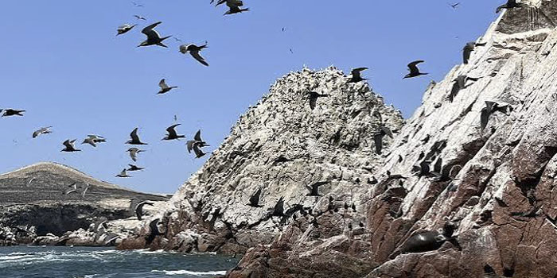

12 - 鸟粪岛
The Guano Islands

很久以前，南美洲有一些小岛。那里住着很多海鸟。岛上有很多鸟的粪便。因为那里很少下雨，鸟粪被保护得很好，一层一层地积累，越来越高，变成了一座座“鸟粪山”。对于农民来说，这些鸟粪非常有用，把它放在地里，粮食就能长得很好。所以，鸟粪就是重要的肥料。为了得到鸟粪，一些国家还发生过战争。后来，很多人被叫去岛上挖鸟粪。那里的空气很难闻，工作也很辛苦。可是，总会有一天，鸟粪会被挖完。德国的化学家研究了新的技术，可以从空气中得到氮气，然后做成肥料。1913年，工厂开始大量做这种肥料。从此，鸟粪岛变得没那么重要了。到了今天，很多国家都能在工厂做出肥料。中国、美国、俄罗斯、印度等都有很大的工厂。有了肥料，人们就能种更多的粮食。
从此，人们再也不用去南美洲挖鸟粪，再运送回来种粮食。这些鸟粪岛很快就被人们忘记了。人类利用科学技术，从空气中得到了面包。